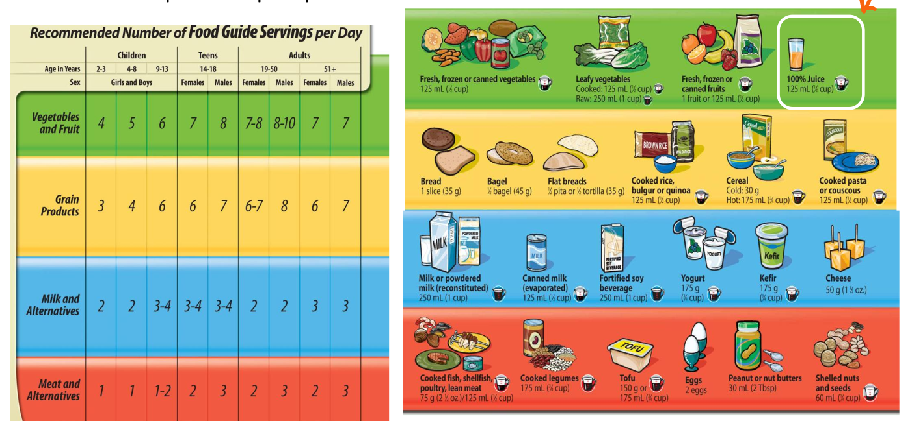
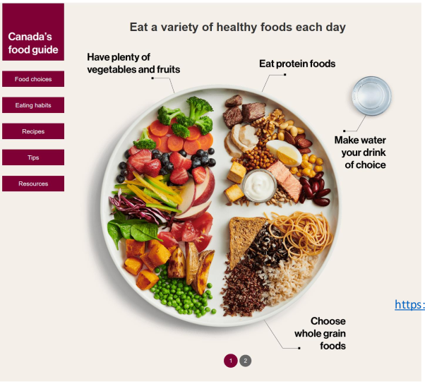

Canada's Food Guide
Controversies about Canada's Food Guide 2007
-
Not enough emphasis on whole grains
-
Food groups may be industry-influenced(Beef and dairy industry)
-
Includes fruit juice
-
Emphasizes total fat intake instead of type of fat. Poor messaging on fat: types of fat(saturated vs unsaturated) are actually more important than total fat intake
-
Not enough emphasis on whole grains
-
Uses prescriptive serving sizes. Consumers prefer proportions instead of absolute amounts.
 -
New Canadian FoodGuide
3 main ideas
- Nutritious foods are the foundation for healthy living.
- Vegetables, fruits, whole grains, and protein should be consumed regularly. Among protein foods, consume plant-based more often.
- Protein foods include: legumes, nuts, seeds, tofu, fortified soy beverages, fish, shellfish, eggs, poultry, lean red meat, lower fat milk, lower fat yogurts, lower fat kefir, cheeses lower in fat and sodium
- Foods that contain mostly unsaturated fats should replace foods that contain mostly saturated fats.
- Water should be the beverage of choice.
- Processed or prepared foods and beverages contribute to excess sodium, free sugars, or saturated fat undermine healthy eating and should not be consumed regularly.
- Food skills are needed to navigate the complex food environment and support healthy eating.
- Food labels should be promoted as a tool to help Canadians make informed food choices
- Cooking and food preparation using nutritious foods should be promoted as a practical way to support heatlhy eating.

Food Choices Key Points
- Eat vegetables and fruits
- Eat whole grains
- Choose protein foods that come from plants more often
- Choose foods with healthy fats instead of saturated fats
- Limit highly processed foods.
- Prepare meals and snacks with ingredients that have little to no sodium, sugars or saturated fats
- Choose healthier options when eating out.
- Make water your drink of choice
- Use food labels
- Be aware that food marketing can influence your choices
Vegetables:
- Vegetables and fruits have important nutrients such as: fibre, vitamins, minerals.
- Include half of vegetables and fruits in your meals.
- Replace juice with water. Fruit juice and fruit juice concentrates are high in sugars.
- Eating variety of vegetables and fruits may lower risk of heart disease.
- How to eat more vegetables
- Wash, chop and refrigerate extra vegetables so you have some ready for next day
- Use pre-bagged vegetables that can be quickly tossed in a salad, stir-fry or casserole
- Serve raw vegetables with meals
Whole grain foods
- Whole grain foods have important nutrients such as: fibre, vitamins, minerals.
- Whole grain are a healthier choice than refined grains because they include ALL PARTS of the grain.
- Whole grain have more fibre than refined grains. Eating foods higher in fibre can lower your risk of:
- Stroke
- Colon Cancer
- Heart disease
- Type 2 diabetes
- Examples of whole grain: farro, oats, quinoa, brown rice, whole grain pasta, whole grain bread.
- Read ingredient list and choose foods that have the word "whole grain"
Protein Foods
-
Have important nutrients such as: protein, vitamins, minerals.
-
Most often Choose proteins that come from plants. They can provide more fibre and less saturated fat than other types of protein foods.
-
Eat protein foods such as: eggs, lean meats, nuts and seeds, fish and shellfish, lower fat dairy products, beans, peas and lentils, soy beverages, tofu
Healthy Fats
-
Choosing fats with healthy fats instead of saturated fats can lower your risk of heart disease. Heart disease is 1 of the leading causes of death in Canada.
-
The type of fat you eat over time is more important for health than the total amount of fat you eat
-
Foods containing saturated fats: Fatty meats, high fat dairy products, highly processed foods, tropical oils like palm and coconut, ice cream, deep fried foods like French Fries, pizza and other foods containing lots of cheese
-
Choose lean cuts of meat and skinless poultry.
-
Trim off as much of the visible fat as possible
-
Drain fat from cooked ground meat.
Drinks
-
Make water the drink of your choice
-
Healthy drink options other than water can include:
### Limiting highly processed foods
Processed or prepared foods and drinks that add excess sodium, sugars, or saturated fat to the diets of Canadians.
Highly processed foods include:
-
Sugary Drinks, chocolates and candies, ice cream
-
Fast foods like French Fries and burgers
-
Frozen entrees like pasta dishes and pizzas
-
Bakery products like muffins, buns and cakes